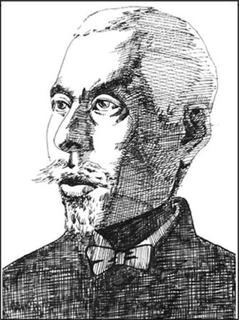
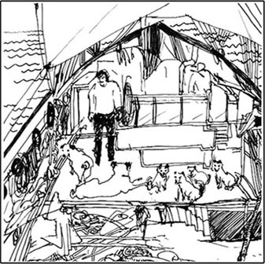
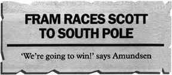
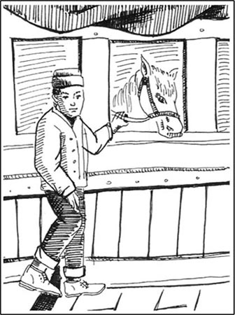
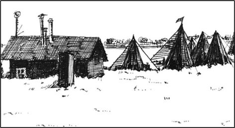
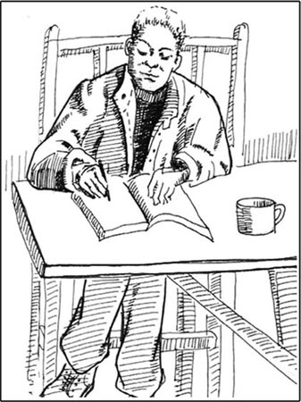
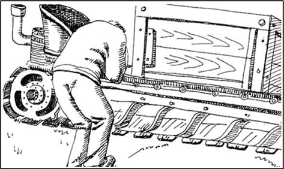
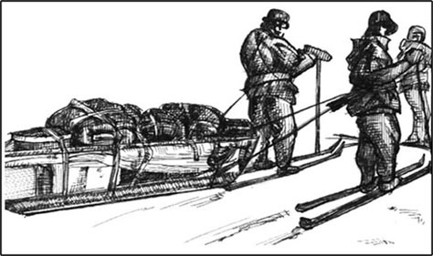
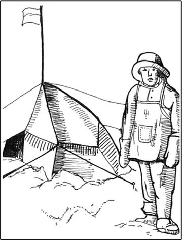
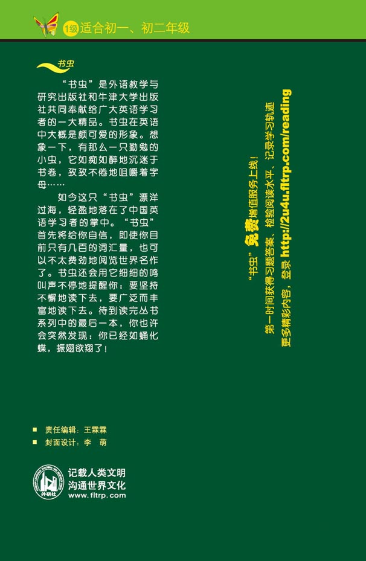

扉页
版权页
京权图字：01-97-0330
Originally published by Oxford University Press, Great Clarendon Street, Oxford. © 1992
This edition is licensed for sale in the People's Republic of China only and not for export therefrom.
'Oxford' is a registered trademark of Oxford University Press.
只限中华人民共和国境内销售，不包括香港特别行政区、澳门特别行政区及台湾省。不得出口。
图书在版编目（CIP）数据
世界上最冷的地方：英汉对照／（英）维卡里（Vicary，T.）著；罗顺江译．—北京：外语教学与研究出版社，1998.6（2014.12重印）
（书虫·牛津英汉双语读物）
书名原文：The Coldest Place on Earth
ISBN 978-7-5600-1382-4
Ⅰ．世… Ⅱ．①维…②罗… Ⅲ．小说—英国—对照读物—英、汉 Ⅳ．H319.4：I
中国版本图书馆CIP数据核字（1998）第01452号
出版人：蔡剑峰
责任编辑：王霖霖
封面设计：李 萌
出版发行：外语教学与研究出版社
社 址：北京市西三环北路19号（100089）
网 址：http://www.fltrp.com
版 次：1998年6月第1版
书 号：ISBN 978-7-5600-1382-4
* * *
凡侵权、盗版书籍线索，请联系我社法律事务部
举报电话：（010）88817519 电子邮箱：banquan@fltrp.com
法律顾问：立方律师事务所 刘旭东律师
中咨律师事务所 殷 斌律师
简介
简 介
当今，南极有一座房子，叫阿蒙森—斯科特南极站。室内暖融融的，无论夏冬，人们都可以在那儿生活、工作。飞机毫不费力地便能飞抵或是飞离南极站。从这儿到世界其他地方，要不了多少小时。但是从南极站出来走上500米，那儿的南极洲便再次成为地球上最寒冷、最空旷的地区。
在1911年，当时的南极既没见过飞机也没建有住房。除了茫茫大雪、冰封天地与凛凛寒风外，一无所有。没有英国国旗，没有挪威国旗。但是，有几个人缓慢地向南走着，横穿冰封大地。斯科特率领的人配备了小马，而阿蒙森率领的人配备了狗与滑雪板。当时的温度为-30℃或者更糟。这些人忍受着疲倦、饥饿和寒冷……他们中谁将是到达南极的第一人呢？
目前，在阿蒙森—斯科特南极站内墙上写着一些字，是斯科特队长于1912年写在日记里的一句话：
“天啊，这地方太可怕了！”
本文的作者蒂姆·维卡里是经验丰富的教师和作家。他现今在英国北部的约克生活工作。
目录
chapter-a035_ 1 Two Ships
Chapter 1
Two Ships
The race began in the summer of 1910.
On June 1st, in London, a black ship, the Terra Nova, went down the river Thames to the sea. Thousands of people stood by the river to watch it. They were all excited and happy.
On the Terra Nova, Captain Robert Falcon Scott smiled quietly. It was a very important day for him. He was a strong man, not very tall, in the blue clothes of a captain. He was forty-one years old, but he had a young face, like a boy. His eyes were dark and quiet.
One man on the ship, Titus Oates, smiled at Scott.
'What an exciting day, Captain!' he said. 'Look at those people! I feel like an important man!'
Scott laughed. 'You are important, Titus,' he said. 'And you're going to be famous, too. We all are. Do you see this flag?' He looked at the big British flag at the back of the ship, and smiled at Oates. 'That flag is coming with us,' he said. 'In the Antarctic, I'm going to carry it under my clothes. We're going to be the first men at the South Pole, and that flag is going to be first, too!'
* * * * *
Five days later, on June 6th, a man opened the door of his wooden house in Norway. He was a tall man, with a long face. He waited outside the house for a minute. Everything was very quiet. He could see no houses, only mountains, trees, and water. It was nearly dark. The sky was black over the mountains.

The man smiled, and walked quickly away from the house, down to the sea. In the water, a big wooden ship waited for him. The man got onto the ship, and talked and laughed quietly with his friends.
The ship's name was Fram, and the man was Roald Amundsen. The Fram was the most beautiful ship on earth, Amundsen thought. His friends were the best skiers on earth, too. One of them, Olav Bjaaland, smiled at him.
'North Pole, here we come, Captain,' he said.
'Yes.' Amundsen said. His friends could not see his face in the dark. 'Fram is going to the Arctic.'
Everyone on the Fram was ready to go to the North Pole, to the Arctic. Amundsen wanted to go there, too. But first he wanted to go south. His friends didn't know that.
At midnight on June 6th, the Fram moved quietly away from Amundsen's house, out to sea.
Thames n. a river in southern England. 泰晤士河（位于英国南部）。
wooden adj. made of wood. 木制的。
skier n. a person who travels on skis. 滑雪者。
Arctic n. the northernmost region of the earth. 北极。
1 两艘船
1 两艘船
比赛开始于1910年夏天。
6月1日，伦敦。特若·诺瓦号这艘黑色的轮船顺泰晤士河而下，向大海驶去。成千上万的人伫立岸边观望，所有的人都非常喜悦和兴奋。
特若·诺瓦号上，队长罗伯特·福尔康·斯科特无声地笑了。这一天对他来说太重要了。他个头不高，但长得壮实，穿着蓝色的队长制服。他虽说已经41岁，但是由于长着一张娃娃脸，所以看上去仍像个小孩。他双眼乌黑而又沉静。
泰特斯·奥茨，船上的一位水手，冲着队长笑了。
“多么令人兴奋的日子啊，队长！”他说，“看看这些人！我觉得自己好像一个重要人物！”
队长朗声笑了。“泰特斯，你的确是重要人物，”他说，“而且你很快就要名扬天下，就同我们大家一样。你看到这国旗了吗？”他注视着船尾那面巨幅的英国国旗，微笑着对奥茨说：“那面国旗将会随我们一道去。在南极洲，我将把它夹在衣服里面带着。我们将成为首批到达南极的人，那面国旗也将是第一面到达南极的旗帜。”
* * * * *
5天以后，6月6日。在挪威，一个人拉开了自己的木房子的门。这人高个、长脸。他在室外稍候了片刻，四周万籁俱寂。他目光所及之处，没有住房，只有群山、树林和大海。天近傍晚，群山之上是黑沉沉的一片天空。
这人脸上露出微笑，快步离开木屋，朝海边走去。大海中，一艘大型木船正等着他。他来到船上，与朋友们聊着，轻声地笑着。
这船叫弗雷门号，这人便是罗阿尔·阿蒙森。阿蒙森认为，弗雷门号是地球上最美丽的一艘船。他的朋友是地球上最优秀的滑雪者。其中有位叫奥拉夫·比阿兰德的朋友，正冲着他微笑。
“北极，我们去那儿，队长。”他说。
“是的，”阿蒙森说。由于天色已黑，这位朋友看不见他的面部表情。“弗雷门号正驶向北极。”
弗雷门号上的每个人全都准备就绪：到北极圈，上北极。阿蒙森也想去那儿。然而他第一想做的事，便是向南航行，而他的朋友却毫不知情。
6月6日午夜，弗雷门号无声地驶离阿蒙森的家园，驶向大海。
chapter-a035_ 2 The Race
Chapter 2
The Race
The Fram went to an island in the south of Norway. It was a very little island, with only one small wooden house, two trees—and nearly a hundred dogs.
'Look at that!' Bjaaland said. 'It's an island of dogs! There are dogs in the water, near the trees, on the house—dogs everywhere!'
Two men came out of the house. 'Hassel! Lindstrøm!' Amundsen said. 'It's good to see you! How many dogs do you have for me?'
'Ninety-nine, Roald,' said Hassel. 'The best ninety-nine dogs from Greenland. And they're very happy! They don't work; they just eat and play all day! They're having a wonderful summer here!'
'Good, good.' Amundsen laughed. 'But that's finished now. Hey, Bjaaland! Stop laughing—come down here and help me. Let's get all these dogs onto the ship!'
It was not easy. The dogs were fat and strong, and they didn't want to go on the ship. But at last, after three hours' hard work, all ninety-nine were on the ship, and the Fram went out to sea again.
The men were not happy. The weather was bad, the dogs were dirty, and some of the men were ill. They began to ask questions.

'Why are we bringing dogs with us?' asked one man, Johansen. 'We're going thousands of kilometres south, past Cape Horn, and then north to Alaska. Why not wait, and get dogs in Alaska?'
'Don't ask me,' said his friend, Helmer Hanssen, 'I don't understand it.'
The men talked for a long time. Then, on September 9th, Amundsen called everyone to the back of the ship. He stood quietly and looked at them. Behind him was a big map. It was not a map of the Arctic. It was a map of Antarctica.
Bjaaland looked at Helmer Hanssen, and laughed. Then Amundsen began to speak.
'Boys,' he said. 'I know you are unhappy. You often ask me difficult questions, and I don't answer. Well, I'm going to answer all those questions now, today.'
'We began to work for this journey two years ago. Then, we wanted to be the first men at the North Pole. But last year, Peary, an American, found the North Pole. So America was first to the North Pole, not Norway. We're going there, but we're too late.'
'I don't understand this,' Bjaaland thought. 'Why is Amundsen talking about the North Pole, with a map of Antarctica behind him?'
Amundsen stopped for a minute, and looked at all the men slowly. No one said anything.
'We have to go a long way south before we get to Alaska,' he said. 'Very near Antarctica, you know. And Captain Scott, the Englishman, is going to the South Pole this year. He wants to put his British flag there. An American flag at the North Pole, a British flag at the South Pole.'
Bjaaland began to understand. He started to smile and couldn't stop. He was warm and excited.
'Well, boys,' Amundsen said slowly. 'Do we want the British to put their flag at the South Pole first? How fast can we travel? We have a lot of dogs, and some of the most wonderful skiers on earth—Bjaaland here is the best in Norway! So I have an idea, boys. Let's go to the South Pole, and put the Norwegian flag there before the British! What do you say?'
For a minute or two it was very quiet. Amundsen waited, and the men watched him and thought. Then Bjaaland laughed.
'Yes!' he said. 'Why not? It's a ski race, isn't it, and the English can't ski! It's a wonderful idea, of course! Let's go!'
island n. piece of land surrounded by water. 岛；岛屿。
journey n. going to a place, especially a distant place. 旅行（尤指至遥远的地方之旅行）；旅程；路程。
travel v. to go a long way. 旅行；游历。
2 比赛
2 比赛
弗雷门号抵达挪威南部的一个小岛。该岛很小，仅有一间小木屋，两棵树，还有将近100条狗。
“看那儿！”比阿兰德说，“是座狗岛！海水里有狗，树旁有狗，房顶上有狗，到处都有狗！”
房内走出两个人。“哈塞尔！林德斯特伦！”阿蒙森打招呼，“见到你们真好！你们给我养了多少条狗？”
“99条，罗阿尔，”哈塞尔说，“99条格陵兰最好的狗。这些狗过得太好了，啥事不干，整天好吃好玩！它们正在这儿欢度夏天呢！”
“好，好，”阿蒙森朗声笑了，“但是现在这一切结束了。喂，比阿兰德！别笑啦，下船来这儿，帮帮我，把这些狗全弄到船上去！”
这事并不容易。这些狗又肥又壮，不愿上船。然而在苦干3小时后，所有99条狗全都上了船，弗雷门号再度驶向大海。
船上的人员却高兴不起来：气候恶劣，狗群肮脏，而且有人病倒了。于是，他们便开始提出种种问题。
“我们为什么要带这些狗？”有人提问说，他叫约翰森。“我们即将南行好几千公里，穿越合恩角，然后向北，到阿拉斯加。为什么不等等，等到阿拉斯加后再弄狗？”
“别问我，”他的朋友赫尔默·汉森说，“我也搞不懂。”
好长时间内，这些人一直都在议论纷纷。后来，9月9日那天，阿蒙森将所有人员召集到大船尾部。他静静地站着，看着众人。他身后有一大幅地图，然而这不是北极地图，而是南极洲地图。
比阿兰德看着赫尔默·汉森，笑出声来。这时，阿蒙森开始讲话。
“伙计们，”他说，“我知道你们心中不满。你们经常问我一些难题，我都没有回答。好吧，今天我当即解答所有的问题。”
“两年前，我们便开始为这次旅程做准备。当时，我们想成为最先抵达北极的人。然而去年，美国人皮里找到了北极。所以，美国人首先到达了北极，而不是挪威人。我们现在正要去那儿，但为时过晚了。”
“我听不懂这些话，”比阿兰德心想，“阿蒙森身后挂着南极洲地图，为什么却大谈北极呢？”
阿蒙森稍作停顿，缓缓地看着全体人员。这时没有任何人多嘴。
“到阿拉斯加前，还得南行好远的路，”他说，“你们都知道，几乎是到了南极洲。英国人斯科特队长今年正赶往南极。他想将英国国旗插在那儿。美国国旗已经插上了北极，而英国国旗正插向南极。”
比阿兰德开始省悟了，脸上露出了微笑，难以自制。他浑身暖洋洋的，亢奋不已。
“好吧，伙计们，”阿蒙森缓缓地说，“眼睁睁地看着英国人将他们的旗帜首先插上南极，我们能同意吗？我们的前行速度非常之快，不是吗？我们不仅带着许多狗，而且拥有地球上最杰出的滑雪能手：我们这儿的比阿兰德便是全挪威最优秀的！所以，我有个主意，伙计们。咱们到南极去，赶在英国之前，将挪威国旗插到那儿去！你们有何看法？”
一时间，整个场面安静极了。阿蒙森等待着，而这些人看着他，思考着。这时，比阿兰德朗笑出声。
“对！”他说，“为什么不呢？这是场滑雪比赛，难道不是吗？再说，英国人不会滑雪！这主意绝妙之极！咱们就去那儿！”
chapter-a035_ 3 The Ponies
Chapter 3
The Ponies
On October 27th, the Terra Nova arrived in Wellington, New Zealand. When Scott came off the ship, a newspaper man walked up to him.
'Captain Scott! Captain Scott! Can I talk to you, please!' he said.
Scott stopped and smiled. 'Yes, of course,' he said. 'What do you want to know?'
'Are you going to win?' the man asked.
'Win?' Scott asked. 'Win what?'
'Win the race to the South Pole, of course,' the newspaper man said. 'It's a race between you and Amundsen, now. Look at this!' He gave a newspaper to Scott. Scott looked at it. It said:

Scott's face went white. 'Give me that!' he said. He took the newspaper and read it carefully. The newspaper man watched him, and waited. 'Well, Captain Scott,' he said at last. 'Who's going to win this race? Tell me that!'

Scott looked at him angrily. 'This is stupid!' he said. 'It's not a race! I came here to learn about the Antarctic—I'm not interested in Amundsen, or in races!' Then he walked back onto his ship, with the newspaper in his hand.
Later that day, he talked to his men. He gave them the newspaper, and laughed.
'It doesn't matter,' he said. 'We're in front of Amundsen, and we have more men, and more money. He has only eight men, and a lot of dogs. I know about dogs—they don't work in the Antarctic. We have sixteen men and the new motor sledges—they are much better. And tomorrow the ponies are coming. We need ponies, motor sledges, and good strong British men—that's all. Forget about Amundsen! He's not important!'
Scott asked Oates to look after the ponies, but he did not let Oates buy them. When Oates first saw the ponies, in New Zealand, he was very unhappy. Most of the ponies were old, and some of them were ill.
'They're beautiful ponies, Titus,' Scott said. 'They come from China—they're wonderful ponies!'
Oates looked at them angrily, and said nothing. Then he asked: 'Where is their food, Captain?'
'Here!' Scott opened a door.
Oates looked inside. He thought for a minute. 'We need more food than this, Captain Scott! These ponies are going to work in the coldest place on earth—they need a lot of food—more than this!'
Scott smiled quietly. 'We can't take more food on this ship, Titus. Where can we put it? But it doesn't matter, old boy. They're very strong ponies, you know. The best ponies on earth.'
Later that night, Oates wrote a letter to his mother. There are nineteen ponies on the Terra Nova now, he wrote. All the ponies are in a small room at the front of the ship. We eat our food in the room under the ponies, so our table is often wet and dirty. Scott makes a lot of mistakes, I think, and Antarctica is a very dangerous place.
newspaper man journalist. 新闻工作者；新闻记者。
race v. run a race against. 同……赛跑。
motor adj. having, driven by, an internal combustion engine, a diesel engine, etc. which generates mechanical power. 由产生机械动力之内燃机、柴油机等所推动的。
sledge n. vehicle with runners (long, narrow strips of wood or metal) instead of wheels, used on snow. 雪橇。
dangerous adj. likely to cause danger. 危险的。
3 小马
3 小马
10月27日，特若·诺瓦号船抵达了新西兰的惠灵顿。当斯科特走下船时，一位报社记者迎面走来。
“斯科特队长！斯科特队长！我能与你谈谈吗？”他说。
斯科特停下来，面带微笑。“行，当然可以！”他说，“你想知道什么？”
“你们会是赢家吗？”那人问。
“赢家？”斯科特问，“什么赢家？”
“当然是赢得前往南极的竞赛。”报社记者说，“现在这个竞赛在你与阿蒙森之间展开。瞧！”他将一份报纸递给斯科特。斯科特看到报上是这样写的：
弗雷门号正与斯科特争先向南极进军
阿蒙森说：“我们将赢得比赛！”
斯科特脸色变得苍白。“给我报纸！”他说。他拿过报纸认真阅读。记者观察着他，期待着。“那么，斯科特队长，”他最终开口了，“谁将赢得这场比赛？请告诉我！”
斯科特愤怒地看着他。“真是愚蠢！”他说，“这不是比赛！我来这儿是为了了解南极。我对阿蒙森对比赛都不感兴趣！”然后，他回到船上，手里拿着那张报纸。
当天晚些时候，他对同行人员讲起这事，他将报纸递给他们，然后大笑起来。
“没关系，”他说，“我们现今还在阿蒙森前面。我们不仅人数占优势，而且钱也更多。他呢，除了许多狗外，只有8个人。我熟悉狗性：它们在南极洲干不了活儿。我们有16个人，还配有新式机动雪橇。这些雪橇比狗好使多了。明天，还有小马送来。我们需要小马、机动雪橇以及身强力壮的英国人！这些就够了。忘了那个阿蒙森！他并不重要！”
斯科特分配奥茨喂养小马，但不让他负责买马。在新西兰的时候，奥茨一见到这些小马，便大为光火。这些小马大部分都已老态毕呈，有些还是病马。
“这些都是漂亮的小马，泰特斯，”斯科特说，“纯中国货，匹匹都极为出色！”
奥茨恼火地看着这些小马，没有说什么。随即他问：“队长，它们的饲料在哪里？”
“这儿！”斯科特打开一道门。
奥茨朝里看了看，思索了一会儿。“我们需要更多饲料，斯科特队长！这些小马将在地球上最冷的地区干活儿：它们需要许多饲料，远不止这些！”
斯科特无声地笑了。“这条船上，我们不可能带许多饲料，泰特斯。往哪放呢？没什么关系，老兄。你看见了，这些马十分壮实，是地球上最好的小马。”
那天深夜，奥茨给他母亲写了封信。信是这样写的：特若·诺瓦号船上现在有19匹小马，所有小马都养在船首的小舱里。我们进餐的地方正好位于装运小马的船舱下面。所以我们的餐桌经常湿漉漉、脏兮兮的。我认为，斯科特犯了许多错误。南极洲其实是一个非常危险的地方。
chapter-a035_ 4 Food Depots
Chapter 4
Food Depots
The two ships, Terra Nova and Fram, arrived in Antarctica, in January 1911, at the end of summer. The Englishmen and the Norwegians wanted to stay on the ice all winter. They wanted to be ready to go to the South Pole at the beginning of the next Antarctic summer.
The dogs pulled the Norwegians' sledges. They ran quickly over the snow and pulled the big sledges from the ship onto the ice. The men ran beside them on skis.
They put a big wooden house on the ice. The house was full of food, and skis, and sledges. They called it Framheim. Outside the house, the dogs lived in holes under the snow. When the house was ready, the men made their first journey south.
Before the winter, they wanted to take a lot of food south, and leave it in depots. For the long journey to the Pole, they needed a lot of food, and they couldn't carry it all with them. On February 10th, five men, three sledges, eighteen dogs, and half a tonne of food left Framheim and went south.
It was easy. The weather was warm for the Antarctic, between -7° Centigrade and -17° Centigrade. The snow was good, and the dogs and skis went fast. They went fifty or sixty kilometres every day. After four days they reached 80° South, and made the first depot.
Amundsen made his depot very carefully. It was very important to find it again, next summer. So he put a big black flag on top. Then he put ten flags to the east of the depot—each flag half a kilometre from the next—and ten flags to the west. So there were flags for five kilometres to the left of the depot, and five kilometres to the right.

Then they went back to Framheim, and took some more food south, this time to 82° South.
This time it was harder. The temperature was sometimes -40° Centigrade, and there were strong winds with a lot of snow. The dogs and men were very tired, and the tents and boots were bad. At the second depot, they put out sixty flags, to help them find it again.
They came back to Framheim on March 23rd. It was nearly winter in the Antarctic. Their ship Fram was far away now, near South America. They were alone on the ice.
* * * * *
Oates went with Scott to make the first British depot. They left Cape Evans on January 25th. There were thirteen men, eight ponies, and twenty-six dogs. The dogs were faster than the ponies—they ran quickly over the top of the snow, but the ponies' feet went through it. Every morning the ponies started first, and the dogs started two hours later, because they ran faster. At night, the dogs made warm holes under the snow, but the ponies stood on top of the snow. It was -20° Centigrade.
After fifteen days Oates talked to Scott. There was a strong wind, and the two men's faces were white with snow.
'Three of the ponies are ill, Captain,' Oates said. 'They can't go on.'
'Don't be stupid, Oates,' Scott answered. 'They're good strong animals—the best ponies on earth.'
'Not these three,' Oates said. 'They're ill, and unhappy, and now they can't walk. Let's kill them, and leave the meat here, in the snow. We can eat it, or the dogs can.'
'Of course not!' Scott said angrily. 'These ponies are our friends, they work hard for us. I don't kill my friends!'
Three days later, two of the ponies were dead.
Scott's men were slower than Amundsen's; it took them twenty-four days to get to 80° South. They made a big depot there, and put one large black flag on top of it. Then they went back to Cape Evans.
Their camp was on an island in the ice, and the sea ice moved sometimes. There were holes in the ice, and black sea water under it. One day seven ponies went through the ice into the sea, and died. One motor sledge also went into the sea.
depot n. storehouse. 仓库；储藏货物之所。
centigrade adj. in or of the temperature scale that has 100 degrees between the freezing-point and the boiling-point of water. 摄氏温度计的。
tent n. (usually portable) shelter made of canvas supported by poles and ropes. 帐篷；帐棚（通常可携带）。
boot n. outer covering for the foot and ankle, made of leather or rubber. 长靴；皮靴；胶套靴。
camp n. place where people (eg. people on holiday, soldiers) live in tents or huts for a time. （度假者、军队的）营地。
4 食品贮藏屋
4 食品贮藏屋
两艘船，特若·诺瓦号与弗雷门号都抵达南极洲，时间为1911年1月，夏末。英国人与挪威人均想在这冰封的天地里度过整个冬天。他们都想做好准备工作，以求第二年夏天刚开始时能向南极进军。
群狗拉着挪威人的雪橇，在雪地上高速奔跑，将从船上卸下来的大雪橇拉到了冰面上。众人踩着滑雪板在一旁滑行。
他们在冰封世界上建起一座大木屋。屋子里堆满了食品、滑雪板以及雪橇。他们将这木屋称作弗雷门海姆。木屋外，群狗住在雪下挖出的狗洞里。当木屋准备就绪时，他们开始了首次南行的征途。
在冬天来临之前，他们打算向南方运许多食物，并将食物放到各个贮藏屋里。因为在奔赴南极的漫长旅程中，他们需要许多食物。他们不可能随身带着所有的食物！2月10日，5个人、3辆雪橇、18条狗、以及半吨食物离开了弗雷门海姆，向南行进。
事情进行得颇为顺利。此时的南极气候相对来说还算暖和，介于-7℃与-17℃之间。地面的雪利于行进，狗与雪橇也都跑得很快，每天能走五六十公里。4天之后，他们到达了南纬80°的地方，建起了第一个贮藏屋。
阿蒙森非常精心地修建他的贮藏屋。第二年夏天需要再度找到它，这点特别重要。所以，他在贮藏屋顶上插上一面黑旗。随后他在贮藏屋的东边插上10面旗帜：每半公里插一面；在贮藏屋西边也插上10面旗帜。所以，从贮藏屋向左5公里和向右5公里都有旗帜。
随后，他们返回弗雷门海姆，带上更多的食品后，再度南行。这次抵达了南纬82°的地方。
这次旅程辛苦多了。温度有时低达-40℃。寒风凛冽，雪花漫天。人困狗乏，帐篷与靴子也不顶事了。在第二个贮藏屋附近，他们插了60面旗，目的是帮助他们能再次找到它。
他们再度回到弗雷门海姆时，已是3月23日。这时南极时近冬天。他们的弗雷门号船早已远去，现在到了南美洲附近。只有他们孤独地留在冰封的天地里。
* * * * *
奥茨跟随斯科特，前往修建第一座英国人的贮藏屋。他们于1月25日离开了开普埃文斯。一行13人、8匹小马、26条狗。这些狗比小马要快：它们能够在雪地上快速地奔跑，但是马腿却要陷进雪里。每天早晨，都是小马首先出发。2小时后，狗儿们才上路，因为它们奔跑速度快些。夜里，狗躲进挖在雪下面的温暖的洞里，但是小马只能站在雪地上，承受着-20℃的气温。
15天后，奥茨向斯科特请示。当时的寒风强劲，两人脸上都沾上一层白雪。
“队长，有3匹小马病了，”奥茨说，“走不动了。”
“别犯傻了，奥茨，”斯科特回答说，“它们都是强壮的好畜牲，地球上最好的小马。”
“这3匹不是，”奥茨说，“它们病歪歪的，无精打采。现在它们根本无法走路。杀了它们吧，将肉留在这儿的雪里。这样我们可以吃，或者让狗吃。”
“绝对不行！”斯科特生气地说，“这些小马是我们的朋友，它们拼命地为我们干活儿。我可不想杀掉自己的朋友！”
3天后，其中有2匹小马死了。
斯科特的人比阿蒙森的人动作慢。他们花了24天才抵达南纬80°地区。他们在那儿修建了一个大贮藏屋，在棚顶上插了一面大黑旗。然后，他们返回开普埃文斯。
他们的营地构筑在冰上的一个小岛上，海冰有时还会移动。冰层中还有些空洞，可以看到冰下的黑色海水。一天，7匹小马从冰窟中掉进海里，死了。还有一辆机动雪橇也掉进了海里。
chapter-a035_ 5 A Long Cold Winter
Chapter 5
A Long Cold Winter
It was dark for four months. Outside the wooden house at Framheim, it was often -60° Centigrade. The dogs lived in warm holes under the snow. The men stayed in the house, and worked in their rooms under the snow.
The skis and sledges came from the best shops in Norway, but Bjaaland wasn't happy with them. He changed a lot of things on the skis and sledges. Soon the sledges were stronger than before. The skis were better and faster, too.
All the Norwegians worked hard. They looked after their dogs, and worked on their equipment—the sledges, skis, tents. Every day they thought about their journey to the Pole, and talked about it. And every day, Amundsen thought about Scott. One day, in midwinter, he talked to his men.
'Let's start early, before Scott,' Amundsen said. 'Remember, Scott has more men than us, and he has motor sledges, too. Perhaps they can go faster than us.'
Bjaaland laughed. 'Oh no, they can't go faster than me,' he said. 'On snow, nothing can go faster than a good man on skis.'
'We don't know,' Amundsen said. 'You're the best skier in Norway, but you get tired, and dogs get tired, too. Motor sledges don't get tired. They can go all day and all night.'
Johansen laughed angrily. 'That's stupid,' he said. 'Perhaps the motor sledges can go all night, but the Englishmen can't. The English can't win, Roald—they don't understand snow, but we do. And they're too slow.'

'Perhaps,' Amundsen said. 'But I want to win this race. So we're going to start early! Do you understand?'
It was quiet and warm inside Framheim. Bjaaland looked at Amundsen, and thought about the long, cold journey in front of him. He thought about the dogs in their holes under the snow, and listened to the wind over the house. 'When, Roald?' he said quietly.
'On August 24th. The sun comes back on that day. We start then.'
'But we can't!' Johansen said. He looked angry, and unhappy. 'That's too early! We can't start then—it's dangerous and stupid!'
Amundsen looked at Johansen coldly. 'You're wrong, Johansen,' he said. 'We want to win, remember? So we start on August 24th.'
Bjaaland listened to the winter wind outside.
* * * * *
In Scott's camp, at Cape Evans, no one talked about Amundsen and no one worked hard. They had good food, and they played football on the snow. They wrote a newspaper—The South Polar Times—and read books. No one learnt to ski, no one worked on the motor sledges. Twice, men went for long journeys across the snow. They walked, and pulled the sledges themselves. Oates stayed at Cape Evans and looked after his ponies.
Over the window in Cape Evans, Scott put a map of Antarctica. With a pen, he made a line from Cape Evans to the South Pole, and he put a little British Flag at the Pole. Under the map, Scott wrote the day for the start of their journey.
We start on November 3rd, he wrote.
equipment n. things needed for a purpose. 装备品；设备品。
twice adv. two times. 两倍；两次。
pull v. use force upon (sth. or sb.) so as to draw towards or after one, or in the direction indicated. 拉；拖；扯。
line n. piece or length of thread, string, rope or wire for various purposes. 线；索；绳。
5 漫长的寒冬
5 漫长的寒冬
4个月中不见天日，一片昏暗。在弗雷门海姆木屋外面，气温低到-60℃。狗儿们生活在温暖的雪洞里。众人则留在木屋里，在白雪覆盖下的房间里，忙着各自的活儿。
尽管滑雪板与雪橇都是从挪威最好的商店购买的，但是比阿兰德对这些设备并不满意。于是，他给滑雪板与雪橇换了许多部件。很快雪橇变得结实多了。滑雪板变得更好更快了。
所有这些挪威人干活儿都很卖力。他们照顾狗群，改良雪橇、滑雪板、帐篷等设备。每天，他们都想着谈论着远赴南极的旅程。每天，阿蒙森脑子里都装着斯科特。隆冬里的一天，他对众人说：
“我们早些走，赶在斯科特之前。”阿蒙森说，“别忘了，斯科特的人比我们多，他还有机动雪橇。所以，他们可能比我们快。”
比阿兰德大笑起来。“啊，不，他们不可能比我快，”他说，“在雪地上，没有任何东西能快过优秀的滑雪者。”
“很难料定。”阿蒙森说，“你虽是挪威最优秀的滑雪者，但是也有疲惫的时候，狗也一样。而机动雪橇则不会累，它能整日整夜地跑个不停。”
约翰森怒极而笑。“真蠢，”他说，“也许机动雪橇可以整夜不停地跑，但是英国人不能啊！英国人不可能赢，罗阿尔。他们不懂雪性，而我们懂。况且他们行进速度非常缓慢。”
“也许如此，”阿蒙森说，“无论如何我想赢得这次竞赛，所以我们要早些出发！你们理解吗？”
弗雷门海姆的房内宁静而温暖。比阿兰德看着阿蒙森，思考起摆在面前漫长寒冷的旅程，想着那些躲在雪洞里的狗儿们，听着屋外的寒风。“什么时候出发，罗阿尔？”他轻声地问。
“8月24日，从那天起太阳就又要回归了。我们就在那时出发。”
“我们不能那时就出发！”约翰森说。他显得很生气，一脸不快。“这太早了！我们不能在那个时候出发，那是危险而愚蠢的做法！”
阿蒙森冷冷地看着约翰森。“你错了，约翰森，”他说，“别忘了，我们想取得胜利。所以，我们的出发时间为8月24日。”
比阿兰德聆听着窗外的寒风。
* * * * *
开普埃文斯，斯科特的营地里，没有任何人谈论起阿蒙森的情况，没有任何人在努力地干活儿。他们吃好东西，在雪地上踢足球，编了一份定名为《南极时报》的报纸，看书。没有人学滑雪，也没有人保养机动雪橇。这些人两度进行过横穿雪原的漫长旅程。他们步行，还拉着雪橇走。奥茨留在开普埃文斯，喂养小马。
在开普埃文斯的窗户上，斯科特挂着一张南极洲地图。他在开普埃文斯与南极之间，用钢笔划了条线，并将一面小小的英国国旗插在南极上。地图下面，斯科特写下了他们的出发日期。
我们于11月3日出发，他写道。
chapter-a035_ 6 A Bad Start
Chapter 6
A Bad Start
On August 23rd, the Norwegians' sledges were ready. They took them outside, and the dogs pulled them across the ice. The sun came up for half an hour, but it was too cold: -46° Centigrade. They could not travel in that weather. They went back to Framheim and waited.
They waited two weeks, until September 8th. Then, with the temperature at -37° Centigrade, they started. They ran happily across the snow to the south—eight men, seven sledges, and eighty-six dogs. Only Lindstrøm, the cook, stayed behind in Framheim.
At first everything went well. They went twenty-eight kilometres on Saturday, and twenty-eight kilometres on Sunday. It was easy. Then, on Monday, the temperature went down—to -56° Centigrade. There was white fog in front of their faces. They couldn't see anything. But they travelled twenty-eight kilometres.
That night, in their tents, they nearly died of cold. Next day, they stopped and made snow houses. Inside the snow houses, it was warm. But everyone was unhappy.
'I told you, Roald!' Johansen said. 'Even September is too early! We can't travel in this cold. Do you want us to die? Let's go back and wait for better weather.'

Amundsen was very angry. He was angry with Johansen, but he was angry with himself, too. He knew Johansen was right.
'All right,' he said slowly. 'We can go on to the depot at 80° South, leave the food there, and then go back. We can't do more than that.'
It was thirty-seven kilometres to the depot. The wind was in their faces all day. Two dogs died on the way. At the depot, they did not stop. They put out the food and the flags, turned round, and went north.
At last the wind was behind them. The dogs ran quickly, and the men sat on the empty sledges. They went faster and faster. It was like a race. Amundsen was on Wisting's sledge, and soon he, Wisting, and Hanssen were three or four kilometres in front. Soon they were alone. They travelled seventy-five kilometres in nine hours, and they reached Framheim at four o'clock that afternoon.
Bjaaland arrived two hours later, with two more men. But the last two—Johansen and Prestrud—went more slowly. Their dogs were tired, their feet were wet and cold, they had no food, and they were alone in the dark. The temperature was -51° Centigrade. They reached Framheim at midnight.
Next morning, Johansen was angry. In front of everyone, he said: 'You were wrong, Roald. September was too early. I told you but you didn't listen. And then you left us alone and we nearly died in the cold! You're a bad captain—I'm a better captain than you are!'
Amundsen was very angry. But at first he said nothing, because he knew that Johansen was right. Then, that evening, he gave a letter to Johansen. It said:
You aren't coming to the Pole with me. When I go south, you can take some dogs and go east to King Edward Ⅶ Land. You can go with Prestrud and Stubberud. You can be the first men to go there—but not to the South Pole!
The Norwegians stayed in Framheim and waited. They lay in bed, listened to the wind outside, and thought about Scott and his motor sledges.
fog n. vapour suspended in the atmosphere at or near the earth's surface, thicker than mist and difficult to see through. 雾。
alone adj. without the company or help of others or other things. 独自的；孤独的；独立的。
King Edward Ⅶ Land （地名）爱德华七世地。
6 出师不利
6 出师不利
8月23日，挪威人的雪橇准备就绪。他们将雪橇搬到户外，狗拉着雪橇穿行在冰封的大地上。太阳已升起半小时，但是气候仍旧很冷：-46℃。他们不可能在这种天气上路，只好返回弗雷门海姆等待着。
他们又等了两个星期，直至9月8日。他们冒着-37℃的低温，出发了。他们愉快地向南奔去，穿行在雪原之中。这一行共有8个人、7辆雪橇、86条狗。留在身后的只有厨师林德斯特伦，他留守在弗雷门海姆营地。
起初一切顺利。星期六他们走了28公里，星期天又走了28公里。事情并不难。然而在星期一，温度降到-56℃。眼前是一片白茫茫的浓雾，他们啥也看不到。即使如此，他们还是前进了28公里。
那天晚上，他们几乎冻死在帐篷里。第二天，他们停了下来，修筑雪屋。尽管雪屋内暖融融的，但是众人的心都很沉重。
“我给你讲过，罗阿尔！”约翰森说，“即使9月份也为时过早！在这种寒冷的天气下，我们不可能前行。你要我们死吗？咱们回去吧，等气候变好些再走。”
阿蒙森恼怒至极。他不仅恼恨约翰森，而且还恼恨自己。他心中明白，约翰森是对的。
“好吧，”他缓缓地说，“我们可以继续前行，到南纬80°的贮藏屋去，把食物留在那儿后，再折回。我们只能做这些事了。”
离贮藏屋有37公里。寒风扑面，整日不歇，有两条狗死在半路了。到达贮藏屋时，他们没做任何停留，取出食物与旗帜后，马上向北调头了。
他们终于将寒风抛在身后。群狗飞快地跑，众人坐在空雪橇上往回赶。它们速度越来越快，就像进行比赛。阿蒙森坐在威斯丁的雪橇上。很快地，他、威斯丁、汉森就领先了三四公里。再一会儿后，他们已经独领风骚了。9小时内，他们跑了75公里。他们到达弗雷门海姆时，是那天下午4点钟。
两小时后，比阿兰德与另外两个人赶了回来。但是约翰森与普雷斯楚德两人速度更慢。他们的狗非常疲倦。两个人的脚又湿又冷。他们的食品也光了，孤独地行进在黑暗之中。当时的气温降到-51℃。他们赶回弗雷门海姆时已经是半夜了。
次日早晨，约翰森大发其火。他当着众人说：“你错了，罗阿尔。9月份太早了。我早告诉过你，可是你听不进去。后来，你又扔下我们，搞得我们孤立无援，几乎冻死在这冰天雪地之中。你是个坏队长，让我当队长也比你强。”
阿蒙森愤怒至极，但刚开始他一言不发，因为他知道约翰森骂得有理。后来，在那天晚上，他递给约翰森一封信。信中这样写：
你不必随我去南极了。在我出发南行之时，你可以带几条狗向东，赶到爱德华七世地。普雷斯楚德与斯塔伯鲁德也可以随你同去。你们可能成为首批到那儿的人——但不是南极！
这些挪威人留在弗雷门海姆，等待着。他们躺在床上，听着屋外的寒风，想着斯科特，想着他的机动雪橇。
chapter-a035_ 7 Motor Sledges and Mountains
Chapter 7
Motor Sledges and Mountains
Scott had two motor sledges now. They were the first motor sledges in the Antarctic—the first on earth. On October 24th, the motor sledges started south from Cape Evans. Four men went with them, but Scott stayed at Cape Evans for another week.
Oates was unhappy. He wrote to his mother: We had a very bad winter here. I don't like Scott. We were here all winter, but he didn't learn to ski, or to drive dogs. Our equipment is bad, and he doesn't think about other people. I'm going to sleep in his tent on the journey, but I don't want to.
On November 1st Scott and Oates and six more men left Cape Evans with eight sledges and eight ponies. The ponies walked slowly because their feet went down into the snow. It was hard work for them and they got tired very quickly. They travelled thirteen or fourteen kilometres in a day.
Behind the ponies came Meares with one sledge and some dogs. Meares knew how to drive dogs. Every day, Meares started two hours after the ponies, and arrived two hours before them.
After five days, they found the motor sledges.
* * * * *
The Norwegians began again on October 20th. There were five men this time—Amundsen, Bjaaland, Wisting, Hassel, and Hanssen. They had four sledges, and forty-eight dogs.

There was a lot of wind and fog. On the first day, Wisting's sledge suddenly stopped, and the back went down. 'Come on, you dogs!' he said angrily. 'Pull! Pull!' At first nothing happened; then, slowly, the sledge moved again. Wisting looked down, over the side of the sledge. Under the snow, there was a fifty-metre hole.
'Did you see that?' Amundsen said. 'The ice wants to eat us—men, dogs, sledges, everything.'
On the fourth day they reached the depot at 80° South. There was a bad snowstorm, but they found the flags easily. Next day the men stayed in their tents, and the dogs played in their holes under the snow. They were all happy. They had a lot of food, they had good equipment, and they were warm. They could travel fast.
Next morning, the snowstorm stopped, and the journey began again. Today, everything is wonderful, Bjaaland wrote in his diary. But where is Scott? In front of us, or behind?
* * * * *
There was no one with the motor sledges; they were broken. Scott looked at them angrily.
'It doesn't matter,' he said. 'Teddy Evans and his men are in front of us. They're good men—they're pulling their sledges themselves. We can get to the Pole on foot.'
Oates looked at Meares. Oates and the ponies were tired, but Meares and his dogs were not. The snow was home for them.
That night, Oates wrote: Three motor sledges at ￡1,000 each, 19 ponies at ￡5 each, 32 dogs at ￡1.50 each. Well, it's not my money, it's Scott's.
On November 21st, one of the ponies died.
* * * * *
On November 11th, the Norwegians saw the mountains.
The mountains were very high—some of the highest on earth. Bjaaland smiled.
'There is good skiing up there, Roald,' he said. 'But can dogs get up there too?'
'Of course they can,' Amundsen said. 'Come on.'
They left Hanssen with the dogs, and skied a little way up the mountains. It was difficult, but the mountains were big and beautiful. Behind the mountains, Amundsen thought there was a high plateau of ice. 'That's it,' Amundsen said. 'That's the road to the Pole. Tomorrow, we can bring the dogs and sledges up here. But now, let's have a ski race. Who can get back to camp first?'
They laughed, and skied happily down the white snow. 'This is like home,' Bjaaland thought. 'But it's bigger than Norway, and better.'
In the next four days, the dogs pulled the sledges eighty-one kilometres, and went up 3,000 metres. At last, Amundsen and Bjaaland stood on the plateau behind the mountains. They were tired, happy men.
Bjaaland looked back at the mountains. 'Can a motor sledge get up here?' he asked.
Amundsen smiled. 'No,' he said. 'I don't think so. And Scott doesn't like dogs. So his men are going to pull their sledges up these mountains themselves. Would you like to do that, Olav?'
Bjaaland didn't answer. He smiled, and skied happily away across the snow.
mountain n. mass of very high land going up to a peak. 山；高山。
snowstorm n. heavy fall of snow, especially when accompanied by strong wind. 大雪；（尤指）暴风雪。
plateau n. a high, flat place on a hill. 高地；高原。
answer v. say or write sth. in return. 回答；答复。
7 机动雪橇与大山
7 机动雪橇与大山
斯科特现有两辆机动雪橇，这两辆机动雪橇不仅在南极洲而且在地球上也是首次出现。10月24日，机动雪橇向南进发，离开了开普埃文斯。4人随雪橇同往，但斯科特在开普埃文斯多逗留了一星期。
奥茨心中不快。他给母亲写信说：我们在这儿度过了一个极为恶劣的冬天。我不喜欢斯科特。我们整个冬天都在这儿闲着，可是他既不学滑雪，也不学驾驭狗。我们的设备不好，但他是不会为别人着想的。一旦我们踏上旅程，我将与他同睡一个帐篷，但我不愿意。
11月1日，斯科特、奥茨以及其他6个人离开了开普埃文斯，他们带着8辆雪橇、8匹小马。这些小马走得不快，因为马腿总会踩进雪里。这对它们来说太辛苦了。它们的体力消耗得很快，一天只能走十三四公里。
在小马后面，是米尔斯，他驾着一辆狗拉的雪橇。米尔斯懂得驾驭狗。每天，小马出发后两小时，米尔斯才上路，却比它们还先到两小时。
5天以后，他们追上了机动雪橇。
* * * * *
10月20日，挪威人又出发了。这次共5人：阿蒙森、比阿兰德、威斯丁、哈塞尔和汉森。他们带着4辆雪橇和48条狗。
狂风呼啸，浓雾茫茫。第一天，威斯丁的雪橇忽然停住了，雪橇后部陷了下去。“使劲，你们这些小狗！”他狂怒地说，“拉呀！拉呀！”刚开始时，雪橇一动不动。后来，雪橇缓慢地移动起来。威斯丁从雪橇边探头往下一看。在雪地之下，有个50米深的大洞。
“你刚才看见这洞吗？”阿蒙森说，“冰窟窿打算将我们全都吃掉：人、狗还有雪橇，所有的一切。”
第4天，他们到达南纬80°的贮藏屋。虽然有恶劣的暴风雪，但是他们还是顺利地找到旗帜。次日，他们待在帐篷里，小狗也在雪洞里嬉闹。他们的情绪很高，食物充足，设备精良，人也暖洋洋的。他们可以快速前进。
次日早晨，暴风雪停了，他们又上路了。今天，一切美好极了！比阿兰德在日记里写道。可是斯科特在那儿呢？在我们前面，还是在我们后面？
* * * * *
这时，没有任何人驾驶机动雪橇了：全坏了。斯科特生气地看着这些雪橇。
“没什么关系，”他说，“特迪·埃文斯和他的人在我们前面。他们都很优秀：他们自己正拉着雪橇前进。我们可以凭双脚走到南极。”
奥茨看着米尔斯。奥茨与他的小马人困马乏，而米尔斯与他的小狗则不同，茫茫雪原对于他和他的小狗来说，就像家一样。
那晚，奥茨写道：3辆机动雪橇，每辆价值1000英镑；19匹小马，每匹5英镑；32条狗，每条1.5英镑。当然不是我花钱，而是斯科特掏的腰包。
11月21日，一匹小马死了。
* * * * *
11月11日，挪威人见到了群山。
群山高耸而立，它们属于地球上的一些最高的山了。比阿兰德露出了笑容。
“在上面可以很好地滑雪，罗阿尔，”他说，“但是狗群也能上得去吗？”
“当然，它们能上去。”阿蒙森说着，“走吧！”
他们将狗留给汉森，朝山上滑行了一小段。这可不容易，但群山巍峨秀丽，可以尽情领略。阿蒙森认为群山之后还有一片冰封高原。“就是那儿啦，”阿蒙森说，“那就是通往南极之路。明天，我们可以将狗与雪橇带到这儿来。现在，咱们来一场滑雪比赛，看谁最先回到营地。”
众人大笑，愉快地在白雪之上飞滑而下。“这仿佛是在家中，”比阿兰德心想，“然而这儿比挪威更加辽阔、美好。”
在后来的4天时间内，群狗拉着雪橇跑了81公里，爬了3000米的坡。最终，阿蒙森与比阿兰德将大山抛在身后，站在了高原上，他们虽然很累，但心花怒放。
比阿兰德回头看了看群山。“机动雪橇能上得来吗？”他问。
阿蒙森笑了。“不，”他说，“我认为不行。因为斯科特不喜欢狗，所以他的人得靠自己把雪橇拖上山了。你喜欢这样做吗，奥拉夫？”
比阿兰德没有回答，脸上露出了微笑。他愉快地开始了横越雪地滑行。
chapter-a035_ 8 Across the Plateau
Chapter 8
Across the Plateau
On November 21st, the Norwegians killed thirty dogs. 'They were happy,' Amundsen said. 'And now they're going to die quickly. We need three sledges, and eighteen dogs, to go to the Pole.'
When the dogs were dead, the other dogs ate them. The men ate them, too. They were good friends, Bjaaland wrote in his diary. And now they are good food. Two days later, the dogs were fat. Then, in a snowstorm, they began the journey again.
After the snowstorm, there was fog, and in the fog, they got lost on an ice river with hundreds of big holes in it. They could see nothing, and it was very dangerous. In four days they moved nine kilometres. But the ice is beautiful, Bjaaland wrote. Blue and green and white. This is a wonderful place—but I don't want to stay a long time.
After the ice, there were strong winds and bad snowstorms. They could see nothing in front of them. But every day, they travelled twenty-five or thirty kilometres. Then, on December 9th, the sun came out. They were at 88°23′South—175 kilometres from the Pole.
Five more long days, Bjaaland wrote. That's all now. But where is Scott?
* * * * *
For four days, Scott's men stayed in their tents near the mountains. There is a bad snowstorm outside, Oates wrote. It's too cold for the ponies, and our clothes and skis are bad, too.

On December 9th, Oates killed the ponies. They were tired and ill and they could not walk up to the plateau. Then Meares and his dogs went back to Cape Evans. 'We can pull the sledges ourselves,' Scott said. 'We can do it—we're all strong men.'
There were two sledges and eight men. They went twenty-four kilometres a day. On December 31st, Scott said to Teddy Evans, and the men on the second sledge: 'You can't ski well. Leave your skis here.' So they pulled their sledge twenty-four kilometres without skis.
Next day, Scott went to Teddy Evans's tent. 'You are ill, Teddy,' he said. 'You can't come to the Pole. Take two men and go back, tomorrow.'
Teddy Evans was very unhappy. 'Two men, Captain?' he said. 'Why not three?'
'Because Bowers is going to come with me,' Scott said. 'He's strong—we need him.'
'But... you have food on your sledge for four men, not five!' Evans said. 'And Bowers has no skis!'
'I'm the Captain, Teddy!' Scott said. 'You do what I say. Take two men and leave Bowers with me!'
Oates wrote to his mother: I am going to the Pole with Scott. I am pleased and I feel strong. But in his diary he wrote: My feet are very bad. They are always wet now, and they don't look good.
On January 4th Scott's men left Teddy Evans and went on. Scott, Oates, Wilson and Edgar Evans had skis, but Bowers did not. They were 270 kilometres from the Pole.
* * * * *
December 14th 1911 was a warm, sunny day. Five Norwegians skied over the beautiful white snow. It was very quiet. No one spoke. They were excited, and happy.
'Six more kilometres,' Bjaaland thought. Is there a British flag? I can't see a flag, but...
'Look!' Hassel said. 'What's that over there?'
Bjaaland left his sledge and skied quickly away over the snow. 'What is it?' he thought. 'Is it...? No!'
'It's nothing!' he called. 'There's nothing there... nothing!'
Three kilometres, two. 'Roald!' Hanssen called to Amundsen. 'Go in front of me, please. It helps my dogs.'
'That's not true,' Bjaaland thought. 'His dogs are running well today. But Hanssen wants Amundsen to be first. The first man at the South Pole!'
They skied on and on, over the beautiful snow.
'Stop!' Amundsen said. He waited quietly for his men. 'This is it,' he said.
Bjaaland looked at him. 'But there's nothing here,' he said.
Amundsen smiled. 'Oh yes there is,' he said. 'There's something very important here, Olav. Very, very important.'
'What's that, Roald?'
'Us. We're here now. Isn't that important, Olav?'
The four men stood on the snow, and looked at him. Then, slowly, they all began to laugh.
move v. change position 移动；搬动。
pleased adj. feeling or showing satisfaction. 欣喜的；愉快的；感到或表示满足的。
important adj. of great influence; to be treated seriously; having a great effect. 重要的；严重的；重大的。
stood (past tense of stand) v. have, take, keep, an upright position. 站立；站起。
8 穿越高原
8 穿越高原
11月21日，挪威人杀了30条狗。
“这些狗过得很愉快，”阿蒙森说，“但是现在，它们很快就要死了。我们去南极只需要3辆雪橇、18条狗。”
这些狗处死后，活着的狗吃它们的肉，大家也都吃。它们是我们的好朋友，比阿兰德在日记里这样写道，现在又成为好食物。两天之后，群狗都养胖了。随后，他们冒着暴风雪再度踏上旅程。
暴风雪过后，浓雾弥漫。在隐藏着无数大冰洞的冰河上，他们完全被裹在茫茫浓雾之中，什么也看不见。这太危险了。4天内，他们仅前行了9公里。但是这些冰层非常美丽，比阿兰德这样写道，蓝、绿、白三色。这是个迷人的地方，然而我不愿久留。
走过冰河之后，又遇到凛冽的寒风和可怕的暴风雪。他们眼前茫茫一片，什么也看不见。但是每天，他们仍旧要走25至30公里。12月9日那天，太阳出来了。他们到达了南纬88°23′的地区，距南极175公里。
再过5个漫长的日子，比阿兰德这样写，一切便完成了。可是斯科特在哪儿呢？
* * * * *
4天来，斯科特的人一直留在大山附近的帐篷内。外面下着可怕的暴风雪，奥茨这样写道，这太冷啦，令小马不堪忍受。我们的衣服与滑雪板也都坏了。
12月9日，奥茨杀了几匹小马。这些马又累又病，不可能登上高原了。于是，米尔斯与他的狗群返回了开普埃文斯。“我们可以自己拖雪橇，”斯科特说，“我们能够做到：我们个个都是身强力壮。”
两辆雪橇与8个人，每天走24公里。12月31日，斯科特对特迪·埃文斯以及那些拖着第二辆雪橇的人说：“既然你们不太会滑雪，不如将滑雪板丢在这儿。”于是，他们不用滑雪板而是拉雪橇走了24公里。
第二天，斯科特来到特迪·埃文斯的帐篷内。“你病了，特迪，”他说，“你去不了南极了。明天带着两个人回去吧。”
特迪·埃文斯非常不满。“两个人，队长？”他说，“为什么不是3个人呢？”
“因为鲍尔斯将同我一道前进，”斯科特说，“他身体很棒，我们需要他。”
“但是……你们雪橇上装的食物是供4人食用的，而不是5人！”埃文斯说，“再说鲍尔斯的滑雪板也扔了！”
“我是队长，特迪！”斯科特说，“你照我的话去做。带两个人走，将鲍尔斯留给我！”
奥茨给他的母亲写信说：我正跟随着斯科特向南极进发。我感到欣喜，而且感到精力旺盛。但是他在日记里却是这样写的：我的脚已经非常糟糕了，现在总是湿漉漉的，看来状况不妙。
1月4日，斯科特一行离开了特迪，继续上路了。斯科特、奥茨、威尔逊、埃德加·埃文斯都有滑雪板，然而鲍尔斯没有。他们距南极还有270公里。
* * * * *
1911年12月14日，天气暖和，阳光明媚。5个挪威人在美丽的白雪上滑行着，四周非常安静，没人讲话。他们感到兴奋、欣喜。
“再走6公里，”比阿兰德心想。英国国旗到达那儿了吗？我一面旗帜也没见到，但是……
“瞧！”哈塞尔说，“那儿是什么？”
比阿兰德丢下他的雪橇，在雪地上飞快滑行赶去看。“这是什么？”他心想，“难道是……？不！”
“没东西！”他高声叫着说，“什么东西也没有……啥也没有！”
还有3公里，还有2公里。“罗阿尔！”汉森高声呼唤着阿蒙森，“请你走在我前头，这对我的狗群有好处。”
“不是这回事儿，”比阿兰德心想，“他的狗今天表现不错。汉森是想让阿蒙森成为第一人，第一个到达南极的人！”
他们继续向前滑行，在这美丽的雪原上滑行。
“停下！”阿蒙森说。他静静地等着他的属员。“就是这儿。”他说。
比阿兰德看着他。“可是这儿没有任何东西。”他说。
阿蒙森笑了笑。“啊，不对，有东西，”他说，“这儿有样非常重要的东西，奥拉夫。非常非常重要。”
“什么东西，罗阿尔？”
“我们这些人！我们现在站在这儿，难道还不重要，奥拉夫？”
4个人站在雪地里，看着他。渐渐地，大家开始大笑起来。
chapter-a035_ 9 The End of the Race
Chapter 9
The End of the Race
The Norwegians stayed two days at the Pole. They left a tent there, with a Norwegian flag on it. Inside the tent, they left some food, a letter for the King of Norway, and a letter for Scott.
They left some more black flags near the Pole, and one twenty-eight kilometres north. Then they skied away, back to the north.
It's a beautiful day, Bjaaland wrote. The sun is warm, the snow is good. But the dogs run too quickly—I can't get in front of them!
They found their depots easily. There were ten between the Pole and Framheim. Each depot had a lot of food. They laughed and skied quickly down the mountains. Often, they skied fifty kilometres a day. On Friday, January 26th, 1912, they came back to Framheim. It was four o'clock in the morning.
Inside the wooden house, Lindstrøm, the cook, was asleep. Amundsen walked quietly to his bed. 'Good morning, Lindstrøm,' he said. 'Is our coffee ready?'
* * * * *
The black flags waited at the Pole.
'What's that, Captain?' Bowers said. 'Over there?'
'Where?' Scott asked. 'What—oh my God!'

They all saw the small black flag in the snow, two kilometres in front of them. Slowly, they pulled their sledge to it.
Next day, January 17th 1912, they found the tent and the Norwegian flag. Near it, Scott took the British flag from under his clothes, and put it up. In his diary, Scott wrote: This is a very bad day. We are all tired, and have cold feet and hands. It is -30° Centigrade and there is a snowstorm. Great God! This is an awful place!
They turned north. Five tired, unhappy men, in the coldest, emptiest place on earth.
* * * * *
On March 13th, 1912, Scott's wife Kathleen, looked at her morning newspaper. NORWAY'S FLAG AT SOUTH POLE, it said. She looked at it for a long time, and then began to cry.
'What's the matter?' her friend asked.
'My poor, poor husband,' Mrs Scott said. 'What's happened to him? Where is he now?'
* * * * *
Scott's men were always hungry. There were not many depots and they were difficult to find. We need to find the next depot today, Oates wrote. But how can we find one black flag in all this snow? It's very difficult. And there is food for four men, not five.
They were all tired and ill, too. Oates's feet were black now, and he could not feel them. On February 16th, Edgar Evans died.
On the 17th they were past the mountains. At the depot there they ate one of the dead ponies. Then they went on—ten, eleven, twelve kilometres a day. They were ill because their clothes were not warm and they didn't have much food. The temperature was sometimes -40° Centigrade.
On March 7th Scott looked at Oates's feet. They were big and black. 'I can't pull the sledge now,' Oates said. 'It's very difficult to walk. Am I going to lose these feet, Captain?'
Scott looked at Oates's feet, and said nothing.
On March 9th they found another depot, but there was not much food. Slowly, they walked on. Oates's feet were worse every day.
March 17th was Oates's birthday. He was thirty-two. He lay in the tent and listened to the wind outside. He was very cold, very hungry, and very very tired.
He wrote a letter to his mother and gave it to Wilson. Then he got up, and opened the door of the tent. He stopped in the door for a minute. Scott, Wilson, and Bowers looked at him. They didn't speak.
'I'm going outside for a minute,' Oates said. 'I may be some time.'
They didn't see him again.
* * * * *
At Cape Evans, the Englishmen waited. On December 11th, Meares and the dogs came back. On January 3rd, Teddy Evans and his two men arrived at Cape Evans. The Terra Nova came, and went. Winter began. Scott did not come.
The Englishmen waited all winter at Cape Evans. Then, on October 26th 1912, they started for the south. Two weeks later, they found a tent.
There were three bodies in the tent—Scott, Wilson, and Bowers. They put the bodies under the snow. Then they took the men's letters and diaries, and went north to Cape Evans again.
In Scott's diary they read: Oates died like a good Englishman. We all did. Please, remember us, and look after our families. We did our best.
No one found Oates's body. But he is there, somewhere, under the snow and the wind, in the coldest, emptiest place on earth.
king n. the most important man in a country. 国王；君主。
awful adj. terrible; dreadful. 可怕的。
poor adj. deserving or needing help or sympathy. 值得或需要帮助或同情的；可怜的。
lay (past tense of lie) v. be, put oneself, flat on a horizontal surface or in a resting position; be at rest. 卧；躺。
look after take care of; watch over; attend to. 照料；照看；照顾。
9 比赛结束
9 比赛结束
挪威人在南极逗留了两天。他们在那儿留下一顶帐篷，帐篷顶上插着一面挪威国旗。帐篷里，他们留下一些食物，一封致挪威国王的信，还有一封致斯科特的信。
他们在南极附近留下更多的黑旗，在南极以北28公里处插一面旗。随后，他们滑行而去，返回北方。
这天太美好了，比阿兰德这样写，太阳暖融融的，雪原也变得可爱。然而群狗跑得极快，我无法赶在它们前面！
他们顺利地找到了自己的贮藏屋。从南极到弗雷门海姆，共有10座贮藏屋。每座贮藏屋都贮藏有许多食物。他们欢声笑语，飞快地向山下滑行而去。他们经常一天滑行50公里。1912年1月26日，星期五，他们返回到弗雷门海姆。当时为凌晨4点。
木屋内，厨师林德斯特伦正酣睡着。阿蒙森无声地走到他床前。“早上好，林德斯特伦，”他说，“我们的咖啡准备好了吗？”
* * * * *
那些黑色的旗帜在南极等候着。
“那是什么，队长？”鲍尔斯问，“就在那儿。”
“哪儿？”斯科特问，“什么？啊，我的上帝！”
所有人都看见了插在雪地上的小黑旗，位于他们前面两公里处。他们缓慢地拖着雪橇朝那面旗帜走去。
第二天，1912年1月17日，他们发现了那顶帐篷与挪威国旗。来到帐篷附近，斯科特从衣服内拿出英国国旗，将它挂起来。在他的日记里，斯科特这样写道：这天简直糟糕透了。我们大家都疲惫不堪，手脚冰凉。气温为-30℃。这时又刮起暴风雪。天啊，这地方太可怕了！
在地球上最寒冷、最空旷的地方，站着5位心力交瘁、情绪低落的人。他们回头向北。
* * * * *
1912年3月13日，斯科特的妻子凯思林正阅读着晨报。报纸上登着：挪威国旗插上南极。她长时间注视着这条消息，然后哭起来。
“出什么事啦？”她的朋友问。
“我好可怜的丈夫，”斯科特夫人说，“他出什么事儿啦？他现在在哪儿？”
* * * * *
斯科特的人一直是饥肠辘辘。他们没设多少贮藏屋，而且找起来也很费事。今天，我们必须找到下一个贮藏屋，奥茨这样写，可是在这茫茫雪原之中，我们怎样找到一面黑旗？这太难了，现在的食物只够4个人食用，而不是5个人。
他们一行人病累交加。奥茨的双脚已经发黑，失去了感觉。2月16日，埃德加·埃文斯辞世而去。
17日，他们翻过了大山。在那儿的贮藏屋，他们吃了一匹死马。随后他们继续上路，每天走10公里、11公里、12公里。他们全生病了，因为他们的衣服已经不能保暖，食物也不多。当时的气温有时是-40℃。
3月7日，斯科特看着奥茨的双脚，又肿又黑。“现在，我拉不动雪橇了，”奥茨说，“就连走路都非常吃力。我这双脚还能保得住吗，队长？”
斯科特看着奥茨的双脚，什么也说不出来。
3月9日，他们找到另一个贮藏屋，但是食物并没有多少。他们缓慢地继续走着。奥茨的双脚日渐恶化。
3月17日是奥茨的生日，他年满32岁。他躺在帐篷里，听着外面的寒风。极度的饥寒交迫使他感到非常非常疲倦。
他给母亲写了封信，交给了威尔逊。随后，他起身，打开帐篷门，在门前犹豫了一会儿。斯科特、威尔逊、鲍尔斯都看着他，谁也没讲话。
“我出去一会儿，”奥茨说，“或许过一阵子我才能回来。”
他们再也没见到他。
* * * * *
在开普埃文斯，好些英国人在翘首期待着。12月11日这一天，米尔斯与狗群回来了。1月3日这一天，特迪·埃文斯与另外两个人也回到开普埃文斯。特若·诺瓦号船驶来后，又离去了。又是一个寒冬来临，斯科特一直没回来。
英国人在开普埃文斯等待了整整一个冬天。随后，在1912年10月26日，他们向南出发了。两周后，他们发现一顶帐篷。
帐篷内有3具尸体：斯科特、威尔逊、鲍尔斯。他们将这些遗体葬在雪地里，随后，带着这些人的书信与日记，往北返回开普埃文斯。
在斯科特的日记里，他们读到：奥茨死得像个英国汉子。我们大家也不逊色。请记住我们，请照看我们的家人。我们已经尽了全力。
没人找到奥茨的遗体。但是他就在那儿，在地球上最寒冷、最空旷的地方，在风雪中的某个地方。
Exercises
Exercises
A Checking your understanding
Chapters 1, 2 and 3 Who said this?
1 'I feel like an important man.'
2 'That flag is going to be first.'
3 'North Pole, here we come.'
4 'Fram is going to the Arctic.'
5 'Why are we bringing dogs with us?'
6 'Boys, I know you are unhappy.'
7 'It's a ski race, isn't it? And the English can't ski.'
8 'Are you going to win?'
9 'I know about dogs—they don't work in the Antarctic.'
10 'We need a lot of food—more than this.'
Chapters 4, 5 and 6 Are these sentences true or false?
1 The Norwegians put a wooden house on the ice.
2 Amundsen put a lot of flags beside his depots.
3 The ponies and dogs worked well together.
4 Scott wanted to kill the ponies.
5 All the Norwegians worked hard on their equipment.
6 Amundsen wanted to start south before Scott, because of the motor sledges.
7 Scott's men worked hard on their equipment.
8 The Norwegian cook, Lindstrøm, went south with the sledges.
9 Johansen was angry with Amundsen.
Chapters 7 and 8 Who in the story:
1 wrote an unhappy letter to his mother?
2 knew how to drive Scott's dogs?
3 nearly fell down a fifty metre hole?
4 drove the motor sledges?
5 skied up the mountains?
6 killed thirty dogs?
7 killed the ponies?
8 told Teddy Evans to leave his skis behind?
9 was the fifth man with Scott's sledge?
Chapters 9 and 10 Who said or wrote this?
1 'Good morning, Lindstrøm. Is our coffee ready?'
2 'This is a very bad day.'
3 'My poor, poor husband.'
4 'Am I going to lose these feet, Captain?'
5 'I'm going outside for a minute. I may be some time.'
6 'Please, remember us, and look after our families.'
B Working with language
Put together these beginnings and ends of sentences. Check your sentences in chapters 1, 2 and 3.
| 1 When Bjaaland and Amundsen went to the island, | a because they don't work in the Antarctic. |
| 2 It was difficult to get the dogs on the ship, | b so our table was often wet and dirty. |
| 3 Let's go to the South Pole | c because they were fat and strong. |
| 4 When Scott came off the ship, | d he was very unhappy. |
| 5 I don't like dogs, | e they saw dogs everywhere. |
| 6 When Oates first saw the ponies, | f a newspaper man walked up to him. |
| 7 We ate our food in the room under the ponies, | g before the British. |
Use these words to join the two sentences together.
so and then because when but
1 Scott didn't make enough depots. His men were hungry.
2 The men's feet hurt. Their boots were bad.
3 The ponies started at ten o'clock. The dogs started at eleven.
4 The dogs started later. They ran faster.
5 Seven ponies died. They fell through the ice into the sea.
C Activities
1 Most of the men on the two expeditions wrote diaries. Choose one of the men, and write the diary of the journey, as he sees it.
2 Imagine you are a newspaper reporter who meets Amundsen and Bjaaland when they come back to Norway. Either a) act out this meeting, or b) write the report of your interview.
3 Oates wrote to his mother, and Scott wrote to his wife, before they died. Write one of these letters.
封底
